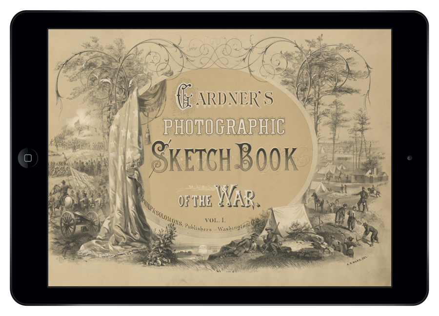

In presenting the PHOTOGRAPHIC SKETCH BOOK OF THE WAR to the attention of the public, it is designed that it shall speak for itself. The omission, therefore, of any remarks by way of preface might well be justified; and yet, perhaps, a few introductory words may not be amiss.
As mementoes of the fearful struggle through which the country has just passed, it is confidently hoped that the following pages will possess an enduring interest. Localities that would scarcely have been known, and probably never remembered, save in their immediate vicinity, have become celebrated, and will ever be held sacred as memorable fields, where thousands of brave men yielded up their lives a willing sacrifice for the cause they had espoused.
Verbal representations of such places, or scenes, may or may not have the merit of accuracy; but photographic presentments of them will be accepted by posterity with an undoubting faith. During the four years of the war, almost every point of importance has been photographed, and the collection from which these views have been selected amounts to nearly three thousand.
Antietam. Manassas. Gettysburg. These are battles that are forever etched in America's memories. The man who captured some of the most horrific images during the War Between the States was Alexander Gardner, an intrepid Scotsman, a jeweler's apprentice of Calvinist upbringing, a newspaper publisher, entrepreneur and photographer.
Gardner's historically significant compilation of images, his Photographic Sketch Book of the War, is one of the most acclaimed photographic manuscripts ever produced, and yet little known. Published in 1866 in two stunning volumes and with an original price tag of $150, only 200 copies were ever printed, with fewer than 14 remaining intact to this day. A complete set of the works sold at Christie's in 2009 for $92,500, beating the $40,000 - $60,000 pre-auction estimate.
This app is a faithful re-publication of Gardner's 1866 masterpiece where you can enjoy:
* Disclaimer - This app is a faithful reproduction of an original version of this 1866 manuscript. We have left all spelling mistakes and/or other "inaccuracies" as is in order to provide a true accounting of this critically acclaimed tome. Also of note, the spelling of various words and locations has changed over the years as well, these have been left true to the 1866 copy as well.
A digital re-publication of the acclaimed 1866 Civil War photographic manuscript by photographer and entrepreneur